AIDCO ofrece servicios de cableado, seguridad, fibra óptica y más.
AIDCO es una empresa con más de 20 años de experiencia en el mercado de las Telecomunicaciones, iniciando en E.U.A al paso del tiempo se logró con la filial mexicana se independizará quedando establecida en Tijuana B.C, convirtiéndose en una empresa nacional cubriendo desde:
Cuenta con la capacidad de soporte para proyectos de alto nivel asegurando respaldo en todo momento ya que su filosofía está enfocada en la garantía de satisfacción y dando valor agregado a sus clientes como empresa consolidada.
En AIDCO nuestra misión es ofrecer soluciones tecnológicas integrales que garanticen seguridad, conectividad y eficiencia para empresas y hogares. Nos comprometemos a brindar servicios de alta calidad en cableado estructurado, CCTV, fibra óptica, control de acceso y sistemas especializados, siempre con responsabilidad, precisión y atención personalizada. Trabajamos para superar las expectativas de nuestros clientes y construir relaciones de confianza a largo plazo.
En AIDCO buscamos consolidarnos como una empresa líder en soluciones de seguridad y telecomunicaciones, reconocida por la calidad, innovación y confiabilidad de nuestros servicios. Aspiramos a expandir nuestra presencia, adoptando tecnologías de vanguardia que permitan a nuestros clientes operar de manera más segura, eficiente y conectada. Nuestra visión es ser un referente en el sector, destacando por nuestro compromiso, profesionalismo y excelencia.
En AIDCO nos guiamos por principios que reflejan nuestro compromiso con cada proyecto y cada cliente:
El Cableado Estructurado es la base de una red confiable y organizada dentro de cualquier empresa u oficina. Consiste en la instalación y distribución correcta de cables de datos, voz y equipos de comunicación, siguiendo normas internacionales que garantizan orden, rendimiento y facilidad de mantenimiento.
En AIDCO diseñamos e instalamos redes estructuradas de alta calidad, certificadas y preparadas para soportar conexiones rápidas, crecimiento futuro y un funcionamiento estable en todos tus sistemas tecnológicos.
CCTV es un sistema de videovigilancia que permite monitorear y grabar en tiempo real las áreas importantes de una empresa, hogar o negocio. Utiliza cámaras estratégicamente ubicadas para brindar seguridad, control y evidencia visual ante cualquier incidente.
Ofrecemos instalación profesional, configuración remota, sistemas HD y 4K, grabación continua, acceso desde el celular y monitoreo inteligente para garantizar la protección total de tus instalaciones.
La Fibra Óptica es la tecnología más avanzada para la transmisión de datos a alta velocidad. Utiliza hilos de vidrio o plástico que transportan información mediante pulsos de luz, logrando conexiones mucho más rápidas, estables y seguras que los cables tradicionales.
Ofrecemos instalación, empalme, certificación y mantenimiento de redes de fibra óptica para garantizar máximo rendimiento, baja latencia y una comunicación confiable, ideal para empresas, industrias y centros de datos.
El Control de Acceso permite gestionar y restringir la entrada a áreas específicas mediante dispositivos como tarjetas, huellas digitales, lectores biométricos y contraseñas.
Este sistema brinda seguridad, orden y trazabilidad, registrando quién entra, a qué hora y desde qué punto.
En AIDCO instalamos y configuramos soluciones de control de acceso para empresas, oficinas, almacenes y áreas restringidas, garantizando un manejo eficiente del personal, protección de activos y acceso únicamente a personas autorizadas.
Los Sistemas de Tierras Físicas son esenciales para proteger equipos, instalaciones y personal contra descargas eléctricas, fallas de energía y sobretensiones.
Este sistema dirige de forma segura la corriente no deseada hacia la tierra, evitando daños en equipos sensibles y reduciendo riesgos eléctricos.
En AIDCO diseñamos, instalamos y medimos sistemas de puesta a tierra de acuerdo con normas oficiales, garantizando seguridad, estabilidad eléctrica y correcto funcionamiento de toda tu infraestructura tecnológica e industrial.
Implementamos soluciones de telefonía empresarial basadas en PBX y VoIP para comunicación clara, estable y escalable. Integramos extensiones, troncales SIP, enrutamiento de llamadas, IVR y buzón de voz.
Ofrecemos instalación y configuración de conmutadores, teléfonos IP, enlaces a líneas tradicionales y plataformas en la nube, con soporte para grabación, reportes y control de calidad.
Habilitamos acceso remoto, integración con CRM y aplicaciones de usuario profesional para equipos en oficina y trabajo híbrido.
Dirección: Avenida Ejército Nacional 3, Tomas Aquino, 22414 Tijuana, B.C.
Teléfono: +52 (664) 629-00-11
Email: ar@aidco.com.mx
Horarios: Lunes a Viernes 8:00 AM - 6:00 PM
.jpg)
.jpg)
.jpg) 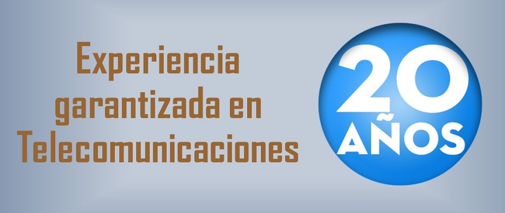
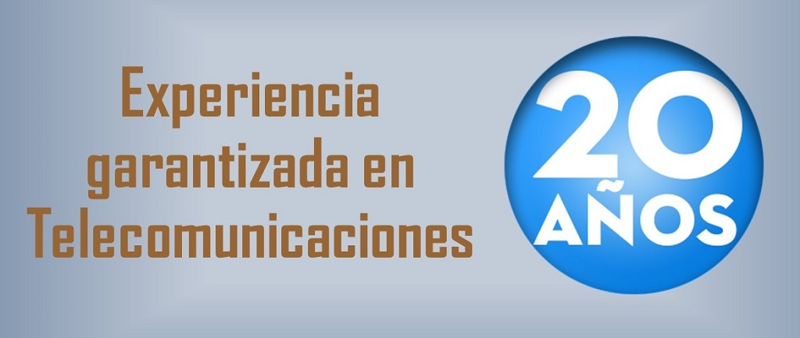
 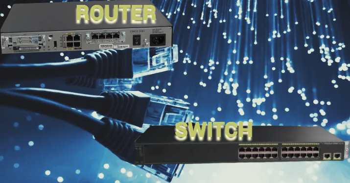
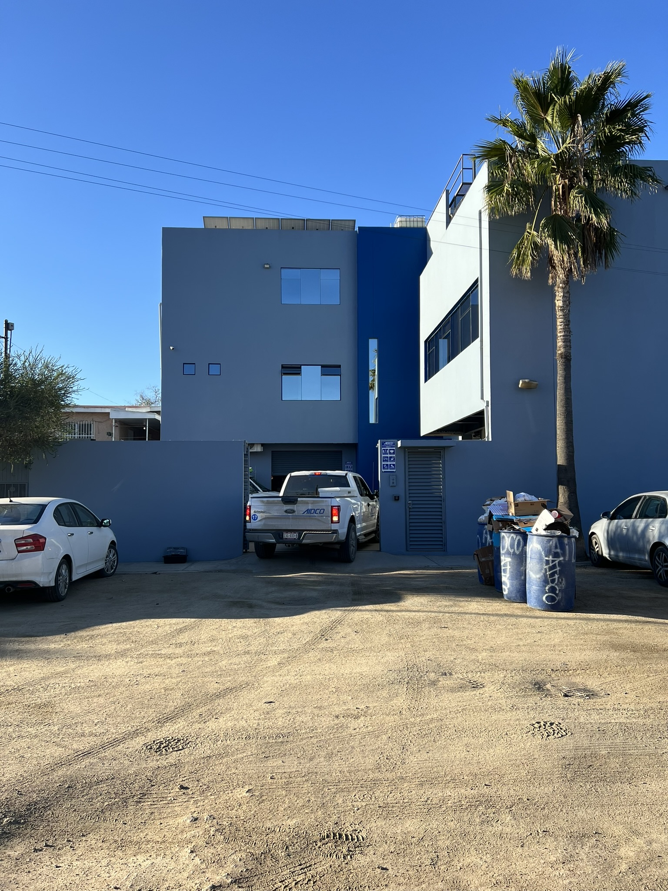
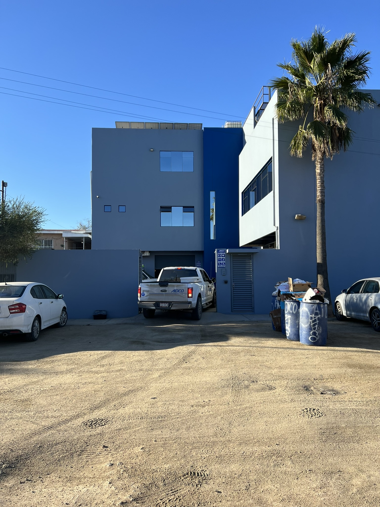
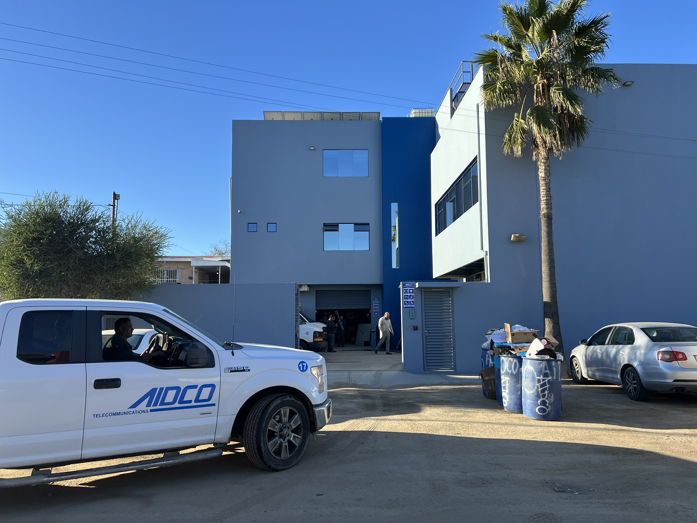
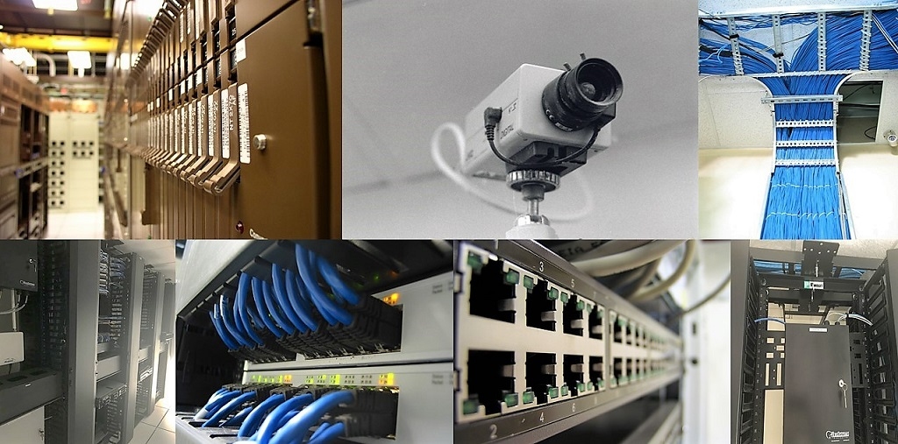
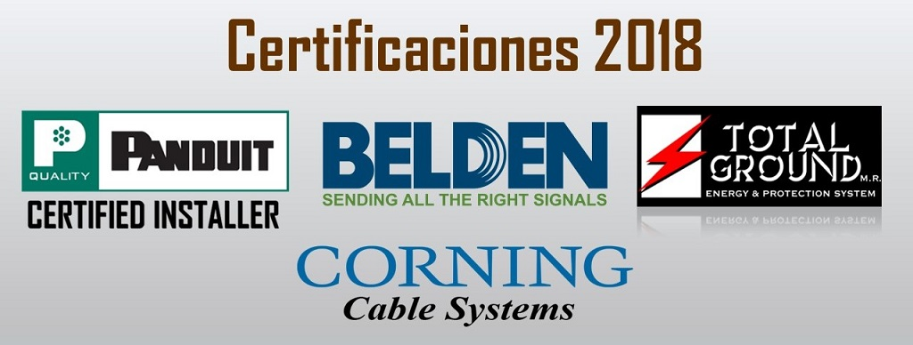
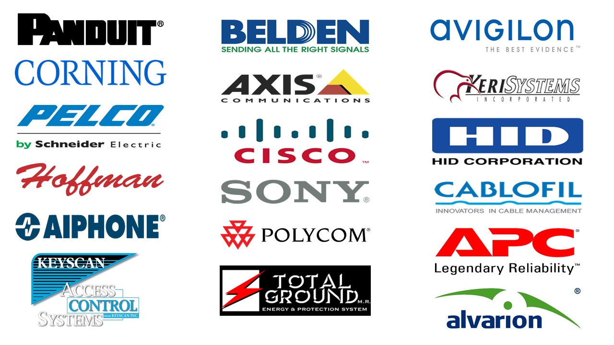
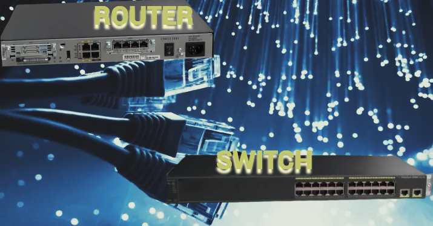
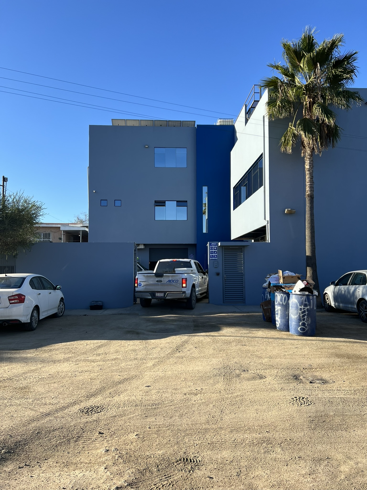
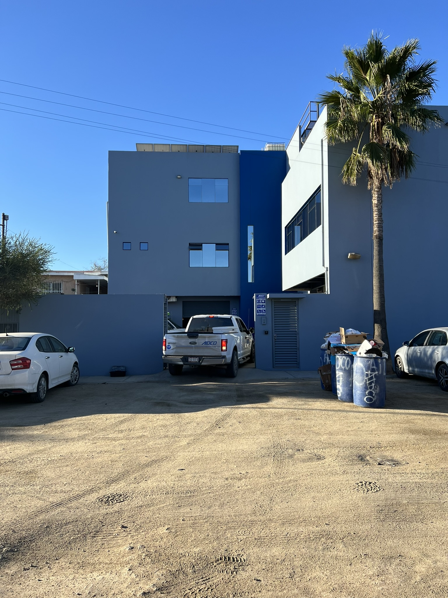
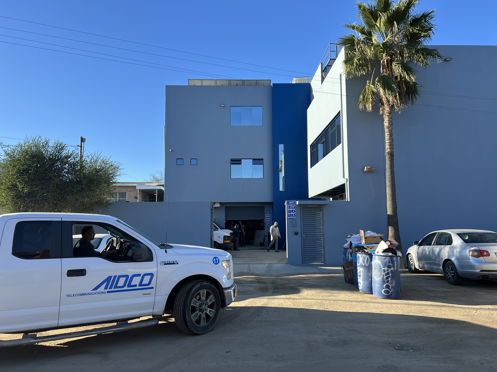
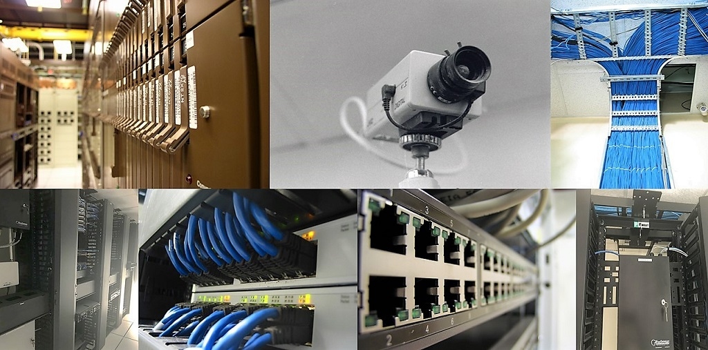
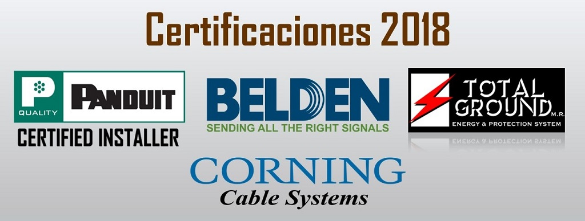
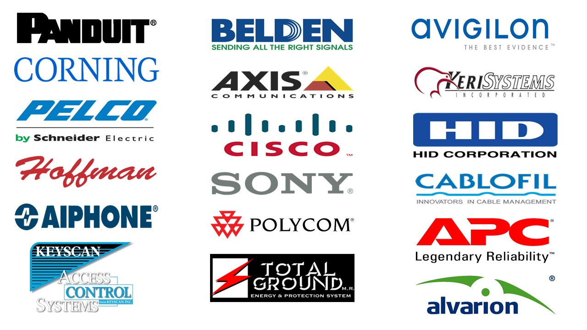